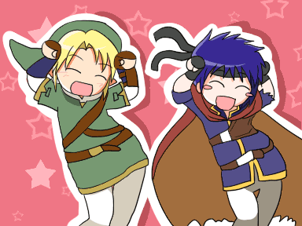

Welcome to Andrew's normal school day. This is a Home Page

This is the link to my github repository
https://github.com/AJFlareau/Tkinter
This is the thkinter project with Ian Pope
https://github.com/AJFlareau/Tkinter-Project
This is what my partner and I worked on for Tkinter. We made a address book, you are fully able to make new contacts, delete contacts, fix / update contacts. Using the select button lets you pull up the contacts informantion. To delete a contact, click on the name you want to delete, push the select button to pull up the information for him or her, then push the delete button. To save a contact, push the select button after clicking the name, go to the text box and change the information, then push save. If you want to add a contact, make sure the text boxs are clear, add the information to the text boxes, then push the Add Contacts button. Thats Our Project!.